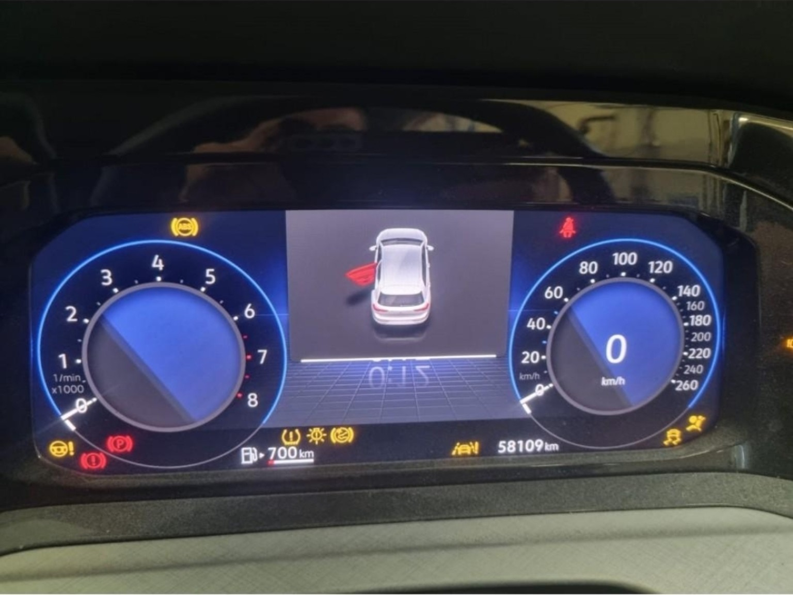

VOLKSWAGEN GOLF 8TH GEN · ΕΡΓΑΣΤΗΡΙΟ ΣΑΕΚ
Πίνακας οργάνων
VolksWagen Golf 8th gen
Διάλεξε μια ένδειξη, δες τι σημαίνει και τι πρέπει να ελέγξει ο τεχνικός. Στη συνέχεια δοκίμασε τις γνώσεις σου σε πραγματοφανή διαγνωστικά σενάρια.
132 ενδείξεις126 εικόνες συμβόλων19 περιστατικά · 38 αποφάσειςΛειτουργεί offline

Αναγνώριση λυχνιών
Επίλεξε μια ένδειξη για να δεις τι σημαίνει και πώς την ελέγχουμε.
Διαγνωστική βάρδια Golf 8
19 υποθετικά περιστατικά, 38 τεχνικές αποφάσεις. Καμία απάντηση ή βαθμολογία δεν αποκαλύπτεται πριν από την τελική υποβολή.
Τι εξασκείς
Πρώτα ασφάλεια, έπειτα έλεγχος συμπτωμάτων και διάγνωση.
Σημαντική διευκρίνιση
Εκπαιδευτικά διαγνωστικά περιστατικά.